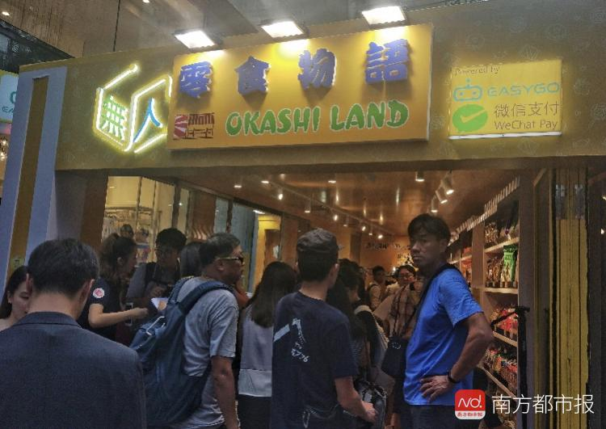
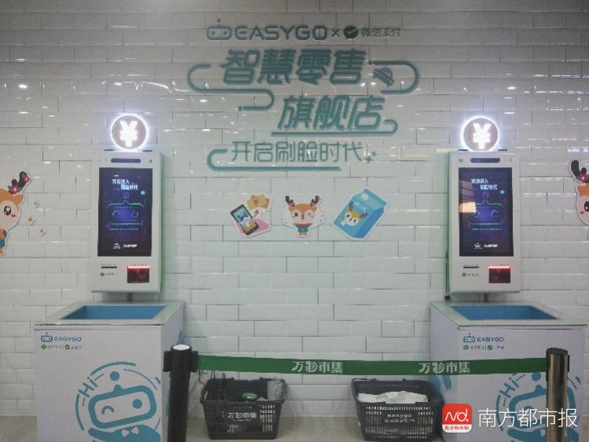

无人零售首次进入香港！EasyGo联手四洲集团拟试水20天探市场反应
无人零售该如何玩下去？ 9月5日，香港首家无人商店“无人零食物语”在香港旺角家乐坊正式开业，这是今年6月份四洲集团战略投资国内无人零售企业Easy Go之后双方首次合作的门店。此前，Easy Go联合万科已开出首家“无人精品超市”。

“未来Easy Go除继续扩展自营的无人门店外，还将向传统零售商输出无人零售技术，进行技术赋能。”Easy Go创始人林乐昌向南都记者表示，同时借香港活跃的零售环境为跳板，EasyGo将继续开拓东南亚、大湾区等新市场。
香港试水无人零售
据了解，EasyGo项目启动于2017年2月，2017年6月开设全国首家以微信小程序与RFID为技术基础的无人值守智能便利店。2017年10月获时代中国（01233.HK）战略投资，今年6月又宣布获得A轮的1.2亿元融资，投资方为香港最大的食品集团四洲集团和RC集团。
9月5日在香港开业的“无人零食物语”体验店是EasyGo与四洲集团的首家合作门店。
南都记者了解到，首店所在地家乐坊是旺角地标式商场，周围人流密集，汇聚了星巴克、H&M、周大福等知名品牌和大量餐饮店，其中无人零食物语位于家乐坊的室外一层，门店面积15平米左右，内有四洲紫菜、鸡蛋仔等百余种食品。在技术上，该门店应用了Easy Go整套RFID射频识别与感应支付门技术，无需下载app或关注公众号，顾客通过微信扫码就可进店，在智能感应商品并通过微信支付结算后，门禁将自动解锁，完成购物体验。
值得注意的是，无人零食物语开店为期20天，从9月5日持续至9月25日。此外，与内地无人零售店24小时营业时长不同，仅周一至周四的中午12点到晚上10点营业，而周五至周日的营业时间是中午11点到晚上10点。同时，店内配有3名店员负责向顾客宣传介绍，引导完成消费。
对此，四洲集团中国业务发展部总经理陈健樑表示，“无人零售店在香港非常少见，半天营业时间是考虑到本地消费者对于无人店的消费习惯尚未养成。尽管无人零售在内地已经发展了一段时间，但香港消费者对于这种模式仍了解较少，四洲集团希望通过体验店让大家对新的零售模式形成认知。当20天的活动结束之后，四洲集团将根据门店反馈和顾客购买数据表现决定后续的开店计划。”
“无人商店是零售业的大趋势，将会颠覆内地及香港的零售潮流，今次是集团拓展无人商店的第一步。未来我们计划以EasyGo无人商店的模式，在内地及香港发展‘无人零食物语’品牌店，四洲集团的美食亦会透过EasyGo无人便利店的网络销售至全国”，四洲集团主席戴德丰表示。
公开资料显示，香港四洲集团于1971年由戴德丰创办，是香港最大的食品企业之一。主要从事食品原料供应、食品制造、食品销售、零售、经营连锁餐厅以及投资控股业务，同时代理来自超过20多个国家之产品，当中包括明治、固力果、百邦、乐天、吉利莲等品牌，并分销至各大百货公司、超级市场、便利店、酒楼、酒吧、酒店及航空公司等渠道。
“四洲集团的入股，不但是对我们运作模式的肯定，更为EasyGo无人智能便利店提供了四洲集团丰富优质的食品品类”，EasyGo创始人兼CEO林乐昌表示，通过与四洲集团的合作，EasyGo也将借助香港活跃的零售市场，将无人商店的营运模式发展至东南亚地区。
联合地产商开拓社区无人超市
南都记者获悉，除了与食品巨头联手巩固上游供应链，Easy Go还在与地产商合作开拓面积更大的社区无人超市。
8月18日万科进军零售领域的第一家新型社区超市“万物市集”在广州番禺万科中央公园面市，该项目由Easy Go与万科合作，在总占地2500㎡的万物市集中，Easy Go开辟出500㎡的无人售卖区，提供了400个品类的商品。
据透露，万物市集日客流量达5000-6000人，其中的Easy Go无人精品超市的客单价为60多元。
“我们的定位是精品超市，所以在选品上更多偏向高端商品，在当前400种品类中，70%为进口商品，30%是国产商品。” Easy Go精品超市项目总经理胡彦宇向南都记者介绍，顾客年龄主要集中在25-45岁之间，因此店铺在选品时除偏向热门“网红”商品外，还主打亲子购物，为顾客提供多种儿童食品选择。据胡彦宇介绍，未来他们还将上线3公里内免费配送服务，将门店辐射范围扩大，覆盖更多人群。
官方资料显示，EasyGo智能便利店已在全国13个城市开设超过100家无人值守智能便利店，进入万科、恒大、时代中国、海伦堡、奥园等大型社区。据林乐昌向南都记者表示，另一家精品超市也将在不久后于广州天河区落地。
“RFID＋小程序”无人模式
南都记者走访“万物市集”了解到，在Easy Go无人超市区共设立了4台采用“RFID＋小程序”模式的自助结算机，顾客在进行结算时无需将货品进行一一扫描，只需把装有货物的购物篮放入自助结算机下，RFID（射频识别）系统将自动扫描所有货物的电子价签并自动计算价格。

除支持正常微信扫码支付外，自助结算机的另一项黑科技是可实现“刷脸”进行支付。据介绍这项‘刷脸’支付技术是与腾讯共同开发，系统在扫描顾客面部后，经过授权可与微信实名注册时的用户信息进行比对，识别确认后便可成功支付。
此外，在该店铺内Easy Go与腾讯还共同开发了可提供详细用户分析的小程序，“通过门口监控摄像头，在对人流量进行实时监控外，Easy Go可基于用户分析小程序计算转化率，更精准地实现选品、补货，提升精细化运营的能力。”
林乐昌向南都记者表示，目前Easy Go在国内已有180多家无人零售便利店，未来2年内Easy Go将继续拓展全国无人零售门店数量，使其增至千家，但大量复制仍需要门店达到盈亏平衡。